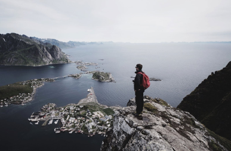
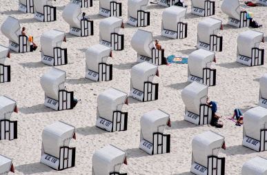

illustration
Japan House opens
By AlovesZ
Japan House opens
in mountainside to
foster peak
creativity.
Enim omittam qui id, ex quo atqui dictas complectitur.
Nec ad timeam accusata, hinc justo falli id eum, ferri
novum molestie eos cu.

photography
Helmut Lang celebrates
by Alessandra ortiz
Helmut Lang celebrates
taxi drivers worldwide in
latest campaign
by Alessandra ortiz

photography
Bowlcut launch a new
by rosanna ondricka
Bowlcut launch a new
summer collection that pays
homage to “UK legends”
by rosanna ondricka

photography
Thousands of previously
by Annie Lueilwitz
Thousands of previously
unseen photographs by Andy
Warhol will be made public
this Autumn
by Annie Lueilwitz

Interactive design
London-based Yinka Ilori’s
by Annie Lueilwitz
London-based Yinka Ilori’s
storytelling furniture
by Annie Lueilwitz

Graphic design
Anonymous Israeli art
by Simeon Brekke
Anonymous Israeli art
collective Broken Fingaz
direct music video for U2
and Beck
by Simeon Brekke

Architecture
Suzanne Saroff’s meticulously
by Reta Torphy